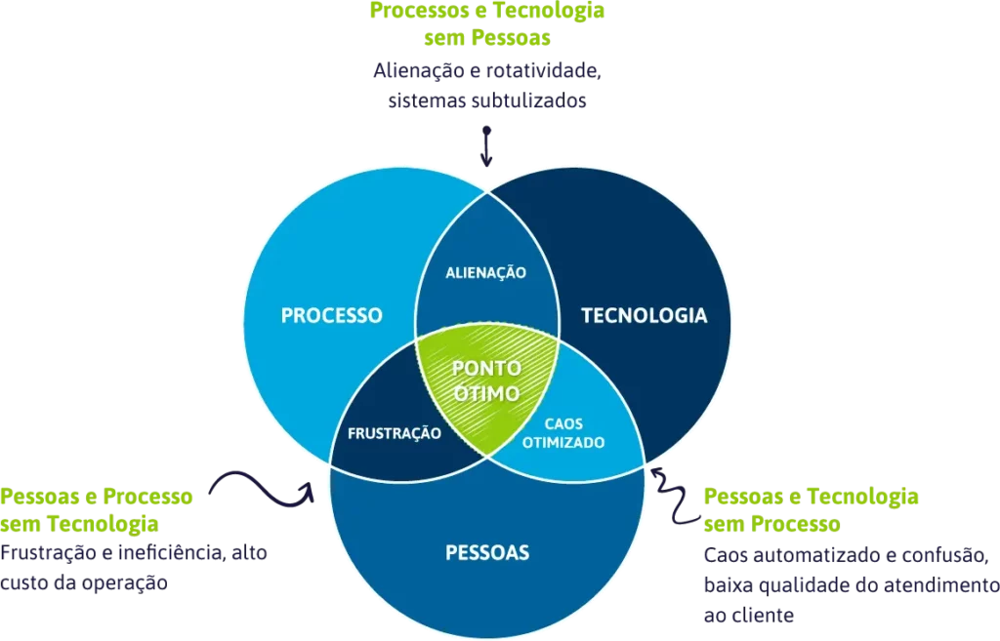

Na Hard, uma empresa de indústria e comércio, além da administração da plataforma de ERP, vários outros sistemas foram implantados na minha gestão. Dentre eles, podemos destacar o TMS da Lincros (antigo Transpofrete). Também trabalhamos em parceria com a empresa Flexy no projeto de e-Commerce do Grupo. Na época da pandemia, vários ajustes foram necessários no ambiente, para propiciar aos funcionários o trabalho remoto. Época de bastante aprendizado principalmente no tocante à segurança das informações. E na Hard, também administrava todo o parque de TI, interno e externo. Internamente, com servidores próprios e bancos de dados Oracle.